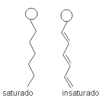
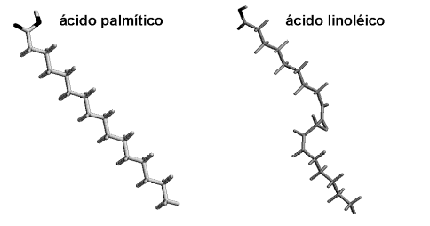
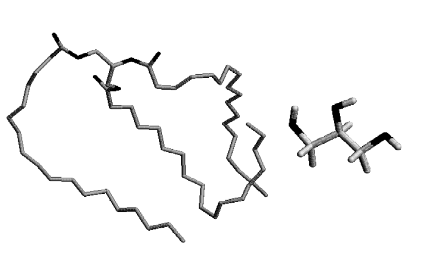

9 Lipídios
Objetivos
- Saber distinguir lipídios alifáticos de derivados isoprenoides;
- Entender como é a nomenclatura de um ácido graxo;
- Entender algumas propriedades físico-químicas de lipídios (ponto de fusão, por ex); a partir de sua estrutura (no. de carbonos, grau de insaturação)
- Saber o que é gordura trans;
- Saber exemplificar os ácidos graxos essenciais;
- Compreender a importância dos ácidos graxos ômega 3, 6 e 9;
- Entender as principais reações com lipídios: hidrogenação, rancificação, e saponificação;
- Compreender as principais classes de lipídios, situando-as no mapa metabólico;
- Compreender a diferença entre glicerolipídios e esfingolipídios, sabendo exemplicá-los;
- Entender o que são e para que servem os eicosanoides;
- Compreender os derivados isoprenoides vitamina A, E e K;
- Compreender a importância do colesterol como precursor biossintético de vitamina D, sais biliares, e hormônios esteroidais.
9.1 Introdução
Os lipídeos são as gorduras. Não apenas aquelas gorduras que pouco desejamos estar instaladas em áreas que determinam pouca nobreza estética, mas também as gorduras modificadas que exercem ação metabólica específica, como vitaminas, alguns hormônios, o colesterol, precursores de sais biliares, e precursores da resposta inflamatória. Lipídeos e muitos dos seus derivados não se dissolvem em água, tampouco se misturam com esta, devido à suas propriedades físico-químicas. Como a água é uma condição quase absoluta para a comunhão de operações metabólicas, podemos imaginar o trabalho que as células têm em manipular estruturas lipídicas. Por outro lado, a membrana biológica tem sua natureza estruturada em lipídeos, o que faz com que diversos compostos químicos lipídicos, incluindo aí algumas toxinas e drogas, possam atingir grande extensão de ação biológica simplesmente difundindo-se através das membranas.
A estrutura de um lipídio padrão assemelha-se a uma serpente em movimento, com cabeça, cauda e aspecto ondulado. A cabeça é a única parte do lipídio que interage com a água, a cauda, que pode ter de 3 a mais de 25 carbonos ligados (-CHx-), interage apenas com estruturas de mesma natureza química, ou seja, com substâncias hidrofóbicas. A parte terminal da cauda de um lipídio padrão possui uma função orgânica de ácido carboxílico (-COOH), o que permite com que, em pH neutro, ela se comporte como um ácido. Como lipídeos são gordurosos, de aspecto graxo, ao mesmo tempo em que são ácidos, os cientistas os denominaram tecnicamente de ácidos graxos.
Metabolicamente, esses ácidos graxos, normalmente 3 serpentes, costumam estar unidos a um álcool específico, o glicerol. Graças ao hermetismo da nomenclatura científica, os pesquisadores deram às estruturas lipídicas formadas por 3 ácidos graxos ligados a glicerol o nome de triacilglicerol ou triglicerídeo ou triglicéride.

Esses triglicerídeos são, em essência, a forma mais rica de energia química armazenada no organismo humano, possibilitando ao mesmo viver sob absoluto estado de inanição por mais de um mês, desde que suas necessidades hídricas sejam saciadas. O colesterol, entretanto, não possui esta estrutura, sendo formado por 4 anéis fundidos derivados da função alcano. Nem é tão mal quanto parece. Em primeiro lugar, o colesterol faz parte da estrutura das membranas plasmáticas, sendo essencial para a flexibilidade destas. Além disso, é a partir do colesterol que se produzem diversas vitaminas, hormônios e sais biliares, esses últimos uma gordura modificada para auxiliar na absorção de gorduras.
9.2 Detalhes
Do ponto de vista físico-químico, lipídeos são biomoléculas solúveis em solventes orgânicos (clorofórmio e metanol) e insolúveis em água. Diferentemente de proteínas, carboidratos e ácidos nucléicos, os lipídeos não são formados por ligações entre monômeros, mas por adição enzimática e covalente de moléculas de acetato (CH3COONa, 2 carbonos, formação dos ácidos graxos) ou de isoprenos (5 carbonos, formação do anel do colesterol).

Funcionalmente, os lipídeos podem ter ação estrutural, energética e metabólica. Estruturalmente, os lipídeos participam da estrutura das membranas biológicas (fosfolipídeos, esfingolipídeos, colesterol, fitosterol), das ceras (ceramida), de orgãos especiais (orgão do espermacete de baleia, rico em ácidos graxos), e da bainha de mielina cerebral (esfingolipídeos, cerebrosídios, gangliosídios).
Bioenergeticamente, os lipídeos, em especial os ácidos graxos formadores do triacilglicerol acumulado em tecidos adiposo, comparecem com 9 Kcal/mol, energia três vezes superior à liberada pelos carboidratos e proteínas. Os ácidos graxos podem ter de 3 (ácidos graxos de cadeia curta) a mais de 30 carbonos (de cadeia longa).
Para distinguí-los, utiliza-se a seguinte notação-exemplo: C18:3\(^{\Delta 9,12,15}\). Essa notação indica que o ácido graxo possui 18 carbonos, com três duplas-ligações situadas no carbono 9, 12, e 15, contados a partir da extremidade carboxilato do ácido graxo. Em poucas palavras, trata-se do ácido linoléico que, juntamente com o linolênico, formam os ácidos graxos essenciais, necessários à composição da dieta pela deficiência enzimática humana de sua síntese.
Outra representação, mais simplificada e relacionada aos ácidos graxos insaturados (que contém duplas ligações), é a representada pela letra grega ômega (\(\omega\)). Assim, ômega-3 e ômega-6 representam, respectivamente ácidos graxos com a primeira dupla ligação no carbono 3 e 6, contados a partir da extremidade apolar do ácido graxo; nesse exemplo, constituem, respectivamente, o linolênico e o linoléico. A presença de duplas-ligações nos ácidos graxos leva à uma liquefação nos produtos formados pelos mesmos. Isso se dá por uma redução nas interações entre ácidos graxos, produzida por curvatura(s) introduzida(s) pela(s) dupla(s) ligação(ões).

Assim, o sebo, ou mais propriamente a gordura animal (ácido esteárico), e a gordura da palma (ácido palmítico), ambos contendo ácidos graxos saturados (sem duplas ligações), são sólidos à temperatura ambiente, ao passo que os ácidos graxos essenciais (encontrados em peixes de água fria e grande parte dos constituites dos óleos vegetais, incluindo canola, milho e soja) são líquidos à mesma temperatura. Industrialmente, pode-se manusear os estados sólido/líquido.
Dessa forma, pelo processo de hidrogenação da margarina, originalmente um óleo vegetal polinsaturado, obtém-se uma redução das ligações duplas de seus ácidos graxos com consequente manufatura para um produto sólido à temperatura ambiente. Dois outros processos envolvem a bioquímica de ácidos graxos: a rancificação, uma liberação de ácidos graxos voláteis de odor desagradável, pela oxidação das ligações duplas dos mesmos, e a saponificação, a combinação de uma base forte (KOH ou NaOH) com ácidos graxos, resultando na produção de sabão.

Metabolicamente, os lipídeos participam de uma série de compostos biológicos, principalmente pela fusão de isoprenóides (cadeis de hidrocarbonetos de 5 carbonos), com consequente formação de hidrocarbonetos de cadeia longa, e de esteróides de 4 anéis. No primeiro caso estão as vitaminas lipossolúveis A, E, K , os carotenóides vegetais (hidrocarbonetos de 40 carbonos, pigmentos acessórios da fotossíntese) e os eicosanóides, dos quais fazem parte o ácido aracdônico, as prostaglandinas, os leucotrienos e os tromboxanos, ambos participantes da resposta inflamatória. No segundo caso, o de lipídeos compostos por estruturas de 4 anéis, ou esteróis, estão o colesterol (e os similares vegetais, fitosterol, stigmasterol, sitosterol) e seus derivados, como a vitamina D e os sais biliares (emulsificação lipídica), e os hormônios esteroidais (pregnenalona, estrógeno, progesterona - hormônios sexuais; cortisol, corticosterol e cortisona - controle eletrolítico). Os esteróis vegetais encontram-se até 90% na forma livre, e até 10% combinados à açúcares, formando os esteróides glicosídicos, importantes na defesa química da planta.

9.3 Aplicação
Nos solos, uma pequena proporção dos fosfatos encontra-se na forma de fosfolipídeos, tais como a lecitina (fosfatidilcolina), a fosfatidil etanolamina e a fosfatidil colina. Nas folhas das pastagens, o teor lipídico oscila entre 3 e 10% do peso seco, declinando com a maturação, mas predominando os galactolipídeos e fosfolipídeos, a maioria nos cloroplastos, e alguns sulfolipídeos. O ácido linolênico representa 65% dos ácidos graxos totais, seguido do linoléico e do palmítico.
As ceras das superfícies das folhas e de frutas cítricas, que conferem impermeabilidade hídrica às plantas, parecem possuir pouco valor nutritivo. O teor e a qualidade de lipídeos nas folhas varia bastante, devido à fatores intrínsecos da mesma e até da temperatura de cultivo.
9.3.1 Série ômega
Os ácidos graxos melhor explorados ultimamente pela literatura pertinente, e que atingiram o mercado industrial alimentício são os chamados ácidos graxos essenciais. Esses ácidos graxos podem ser da série ômega-3 (alfa-linolênico, eicosapentanóico e docosahexanóico) ou ômega-6 (linoléico e araquidônico). São considerados essenciais por ser exigidos na dieta convencional (nutricionalmente essencial). Entretanto, como a maquinaria enzimática animal permite a conversão de linoléico em araquidônico, esse último pode ser considerado apenas metabolicamente essencial.
Os ácidos graxos essenciais, \(\omega\)-3 (ácido linolênico) e \(\omega\)-6 (ácido linoléico), tem sido absorvidos pela indústria de produção de ovos, leites e até de cosméticos. Suas funções abrangem uma reconhecida proteção cardiovascular, melhoramento capilar, cicatrização, combate à infecções e redução de radicais livres, esses últimos associados ao câncer e ao envelhecimento. A deficiência de ácidos graxos essenciais está intimamente ligada a uma diminuição na taxa de crescimento, perda de pelos, dermatites, efeitos deletérios à reprodução e lactação, degeneração testicular, deficiências de cicatrização, maior susceptibilidade a infecções e, eventualmente, óbito.
Como dieta especial, ácidos graxos essenciais tem sido recomendados para aumento de vitalidade, combate a radicais livres, fonte de energia), na gestação (desenvolvimento fetal do cérebro e retina), aleitamento (aumento da quantidade e qualidade do leite, redução do estresse materno durante o período de aleitamento e desmame), reprodução (formação e maturação espermática), competição desportiva (recuperação muscular, brilho e maciez da pelagem em animais de corrida), e processos patológicos (dermatite, problemas ósteo-articulares, inflamação).
Não obstante, dados ainda incompletos sobre sua estabilidade e consumo, os ácidos graxos essenciais estão sendo adicionados a ovos, leites e até em xampoos, visando um público consumidor ávido por novidades que melhorem sua saúde e longevidade. Ainda assim, é sabido que duas colheres de sopa de óleo de soja contém um maior teor de ácido linoléico do que o encontrado em ovos manipulados através da adição do ácido graxo à ração de frangos. Além disso, é bem mais barato.
O ácido linoléico conjugado (CLA) tem sido reportado exercer um grande número de benefícios à saúde animal e, por conseguinte, humana. O CLA é encontrado comumente nas gorduras de alimentos advindos de ruminantes (carne e leite) e seus derivados, especialmente de animais criados a pasto. As concentrações bovinas de CLA dependem do tipo de dieta. O leite de vacas e a gordura da carne de bovinos de corte em sistemas a pasto apresentam maiores concentrações de CLA em relação aos animais tratados em confinamento.
O CLA parece inibir a química da carcinogênese em modelos animais, estimulando o sistema imunológico enquanto diminui seus efeitos catabólicos em aves e roedores. Além disso, tem sido atribuida ao CLA uma diminuição da aterosclerose em coelhos e hamsters, maior crescimento em ratos e porcos, e redução do tecido gorduroso em ratos, suínos, cães e principalmente em humanos. Suínos alimentados com CLA apresentaram redução de 20 % no toucinho e aproximadamente 7 % de aumento no tecido magro. Vacas a pasto suplementado com CLA protegido tiveram elevada a concentração do composto no leite, além de reduzido o teor de gordura láctea, e aumentado o de proteína neste meio.
Em alguns animais e humanos, dietas a base de CLA foram reportadas reduzir a proporção de gordura corporal, especialmente a abdominal, além de proteger contra o câncer de mama e doenças cardíacas. A proporção de ômega-6:ômega3 recomendada à dieta humana tem sido de 5:1, embora a maior parte da dieta tenha apresentação com excessos de linoléico, 25:1. A distribuição do CLA nos alimentos é bastante diversificada, sendo mais proeminente o seu teor no leite e derivados, assim como na carne bovina (4-6 mg/g gordura). Em segundo plano, o CLA também é identificado na carne suína, de frango, salmão, e camarão (0,3-1 mg/g gordura).
9.3.2 Doenças
Clinicamente, existe um grande número de doenças relacionadas aos lipídios, tais como as esfingolipidoses e gangliosidoses (Farber, Niemann-Pick, Tay-Sachs, Fabry) que originam lipogranulomatoses incuráveis. Outras enfermidades de origem genética também são relevantes, tais como a adrenoleucodistrofia (ALD, acúmulo de ácidos graxos de cadeia longa; vide o filme “O óleo de Lorenzo”). As doenças lipídicas de maior incidência populacional, entretanto, são as relacionadas ao metabolismo de ácidos graxos e colesterol, tais como a hipercolesterolemia, apobetalipoproteinemias, arterosclerose (formação de placas de ateroma), hipertrigliceridemias, dentre outras. Em processos inflamatórios, tem os leucotrienos papel fundamental no estabelecimento da asma; drogas anti-inflamatórias não esteroidais, como o isoprofeno, o acetaminofeno e a aspirina, agem no bloqueio da produção de prostaglandinas de efeito pirético (aumento da temperatura corporal), por inibição da PGH-sintase do ácido araquidônico, precursor daquelas.